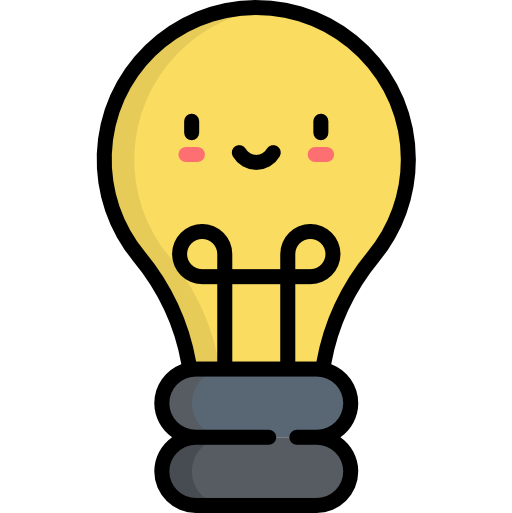

Even parking your car and riding a bike the rest of the way to your destination
can save fossil fuel emissions and introduce some exercise to your day. A 2015
study by the Institute of Transportation Studies at UC Davis found that a dramatic
global increase in bicycling could reduce urban transportation emissions up to
10 percent by 2050.
Find alternatives to plastic whenever possible
Find and use reusable versions of appliances such as bottles, ziplock bags, plastic wrap, etc.
and properly dispose of the plastic you do use to keep it out of our oceans and other waterways.
Additionally,using reusable products may earn you a discount at some places! E.g: Many coffee
shops are implementing a discount to customers who bring their own thermos or mug.
Make more climate-friendly choices towards food.
The decisions we make about food can have a profound effect on the environment.
Some options that are more eco-friendly include: Eating more meat-free meals
(Factory farms feed cows grains, which cause them to release methane into the air
through their gasses), buying organic and local whenever possible, creating a
compost for food waste and scraps, and growing your own food.
Replace inefficient light bulbs.
Nearly 90% of the energy that powers a regular incandescent light bulb is
converted to heat instead of light. This means that not only is a lot of energy
wasted in the process of powering the bulb, but the bulb itself also puts off a
lot of heat. Switching to LED light bulbs are better for the environment as they
are more energy-efficient and last 20 times longer than incandescent or halogen bulbs,
which as a result, fewer bulbs are produced.
Call and meet with your representatives.
When people actively lobby their representatives, they are able to shed light
on important issues such as that of the environment. In the United States, both
chambers of Congress have established the bipartisan Climate Solutions Caucuses.
These caucuses are for members to discuss climate solutions and to work on climate legislation.
Calling representatives and discussing environmental concerns may help push the
proper actions to take place.

Organizations you can support:
Climate Change Action
NextGenAmerica Climate
NextGen America’s mission is to empower young voters to engage in the political
process and ensure our government is responsive to the largest and most
diverse generation in American history. Young people, and especially young
people of color, will be hit hardest by the impacts of climate change. Climate
disaster is already at our doorstep, and it is imperative to transition to 100-percent
clean energy before it’s too late. NextGen provides the tools and confidence young
people need to put climate on the agenda and make the changes to ensure a
livable future for generations to come.
350 defines themselves as an international movement of ordinary people
working to end the age of fossil fuels and build a world of community-led
renewable energy for all. Some of their values include being bold, creative,
and strategic, working for justice, being transparent and accountable, and
collaborating to fight the climate crisis.
The Climate Reality Project states that their mission is to catalyze a global
solution to the climate crisis by making urgent action a necessity across every
sector of society. The organization recruits, trains, and mobilizes people to become
powerful activists, providing the skills, campaigns, and resources to push for aggressive
climate action and high-level policies that accelerate a just transition to clean energy.
Impressively, CRP has trained over 42,000 change makers worldwide since 2006.
The ACE focuses on educating high school-aged students about the climate
emergency and the actions that can be taken in order to possibly solve it
by giving these young people the training, tools, and resources they need to
take action. They place a special focus on the fact that communities that are most
impacted by injustice and social inequity, are also the most vulnerable to
the impacts of climate change. They teach the students to have the courage
to stand up against the negativity and misinformation around climate change
and encourage them to make a difference.
CAMEL, which was created by the National Council for Science and the
Evironment, is a free resourse for educators that provides over 300 interdisciplinary topic
areas and numerous resource types to give the educators the tools they need
in order to teach the causes and consequences of Climate Change and the actions
that can be taken to to fight them. CAMEL allows for an interactive space
where educators are able to create courses, textbooks, administer exams & surveys,
invite others and collaborate around teaching materials, strategies and assessment.
The Climate Change Education Partnership (CCEP) Alliance is a network of
six multi-institutional projects funded by the National Science Foundation with a mission to
advance exemplary climate change education through research and partnerships.
Their goal is to educate citizens so that they are better prepared for a
changing climate, to develop powerful, proven educational approaches, and
finally, to create a collaborative community of climate and learning scientists
and educational practitioners.
For more than a decade, the Conservation Land Foundation has led the only
national movement of grassroots advocates to protect, restore and expand
National Conservation Lands. Located in Durango, Colorodo, they channel
the local enthusiasm to conserve the public lands.
Since 1935, The Wilderness Society has led the effort to unite people to
permanently protect nearly 112 million acres of wilderness in 44 states. We
have been at the forefront of nearly every major public lands victory.
They strongly believe that the public lands belong to and should benefit all
of us. The organization embodies the cultures and perspectives of people and
communities across our nation, and connect and inspire people to care about
the outdoors.
The Rainforest Action Network preserves forests, protects the climate
and upholds human rights by challenging corporate power and systemic injustice
through frontline partnerships and strategic campaigns. They work toward
a world where the rights and dignity of all communities are respected and
where healthy forests, a stable climate and wild biodiversity are
protected and celebrated. They are fighting for the people and the planet.